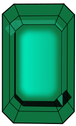

How to play
- You need a Hive blockchain account. If you do not have one, you can get a free account here or learn about Hive and see other options on WhyHive.co
- On the Hive chain, you need to comment/reply to one of your own posts or comments.
- Your comment/reply must include an HBIT or Wusang command, such as
!HBITor!wusang - You can play once per day. No need to try more than once per day, it will not go through.
Summed: Get a Hive account and "mine" for treasure using an HBIT or Wusang command in reply to one of your own posts or comments.
Good luck and happy mining!
How it works
Here's what happens when you "mine" for treasure with a Wusang command like !WUSANG.
- Again, quick summary: To mine on Wusang: Isle of Blaq, reply to your own post or comment with a Wusang command such as
!WUSANG. - The Wusang bot will then pick up your command and issue 1.0 HBIT to you. Consider this your daily "pay" for your effort in mining.
- The bot will also generate a random number. This number will determine whether you find an extra treasure token, such as a BLAQ pearl.
- For transparency, you can monitor your random number, and token transfers, in the log channel found in the LUV-HBIT Discord at https://discord.gg/K5GvNhcPqR in near-real time.
- In a short while, the Wusang bot should send you a confirmation reply (sent in reply to your comment containing the Wusang command that you typed). This reply is usually within a minute, but sometimes there are delays.
- You can check your transfer by going to a Hive-Engine explorer like https://he.dtools.dev and entering your username. Or, you can see your holdings in your wallet, such as at https://tribaldex.com/wallet.
Randomization odds
The random number generated while mining is what gamefies things. Currently, there are four tokens involved in Wusang: Isle of BLAQ. Info and odds are shown below:
| Token | Info | Odds | Probability (% chance) | Max Supply | |
|---|---|---|---|---|---|
| HBIT | Hivebits - your "pay" for diving and mining in the dangerous waters of Wusang. | 1:1 | 100% - you earn 1.0 HBIT every time you dive to mine for treasure. | 21,000,000 | |
| BLAQ | Isle of Black pearl - famed for their ivory-colored beauty, rumored to bewitch men and women to madness with their lustre. | 1:3 | 33% - expect to find one BLAQ pearl every 1 of 3 tries. | 2,100,000 | |
| BLAQGOLD | A gold coin long lost in the many Wusang wars. | 1:10 | 10% - expect to find a BLAQ gold coin every 1 of 10 tries. | 210,000 | |
| BLAQEMERALD |  | An emerald that went down with the many ships lost in the battles around the Isle of Blaq. | 1:20 | 5% - expect to find a BLAQ emerald every 1 of 20 tries. | 10,500 |
In the future, perhaps more treasure tokens will be added and the odds adjusted accordingly. You never know what might be discovered off the shores of the Isle of Blaq.